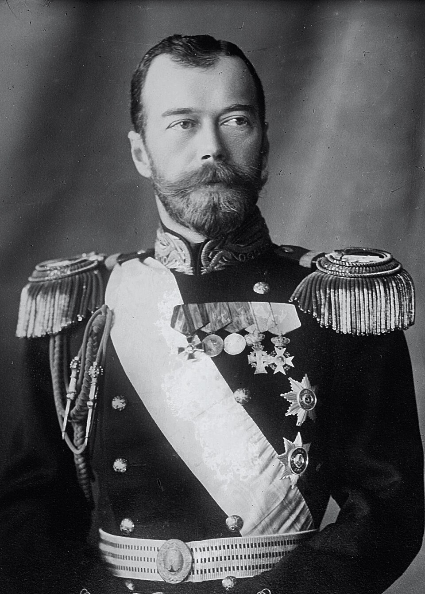
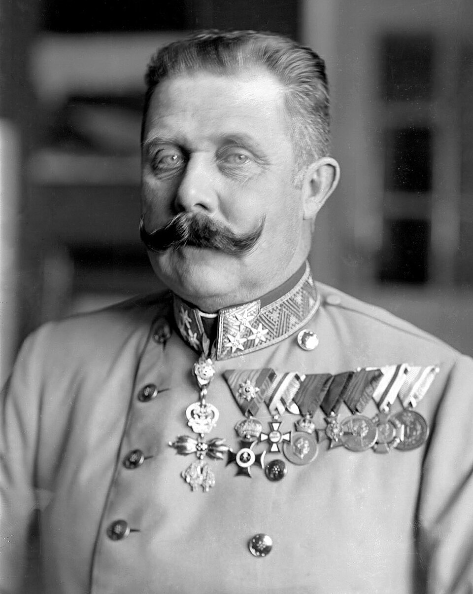
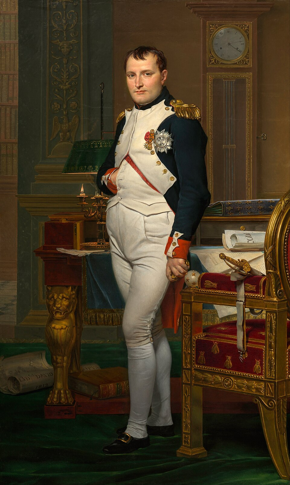
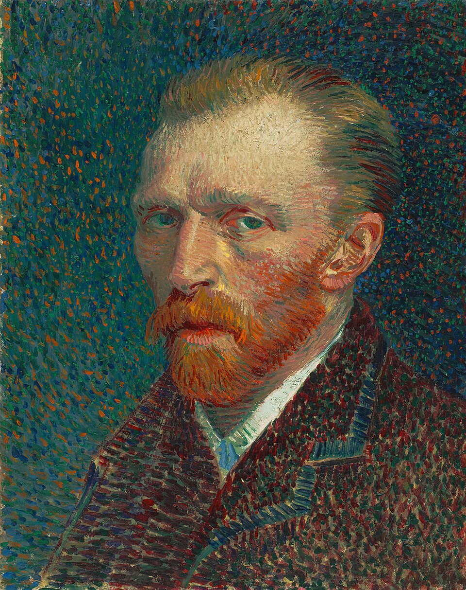
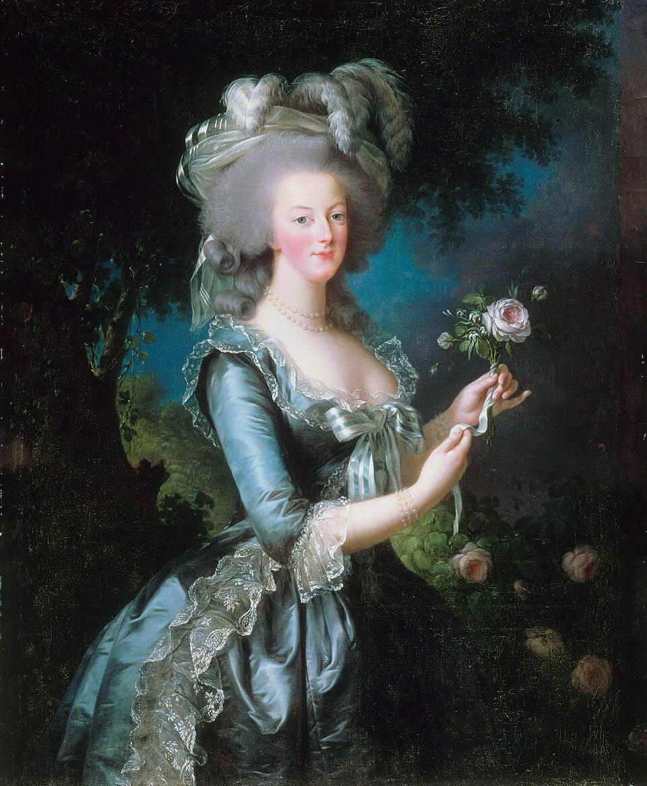
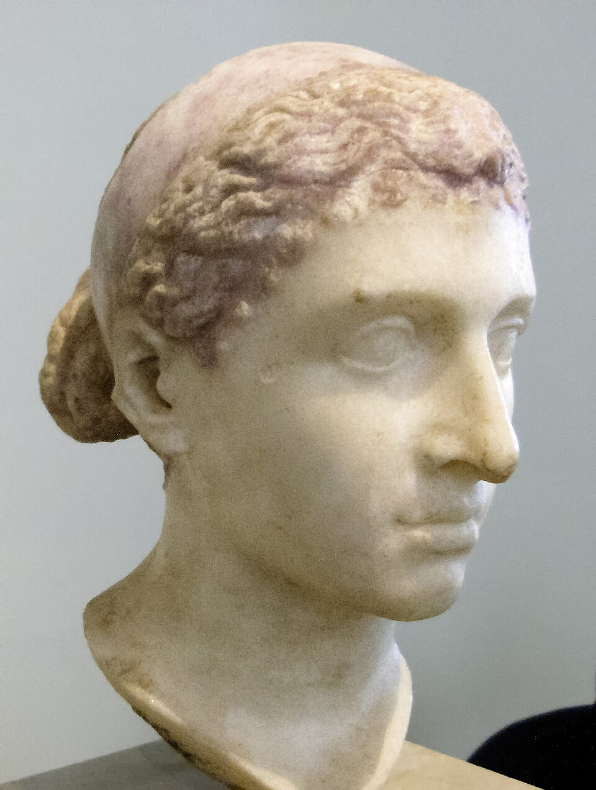
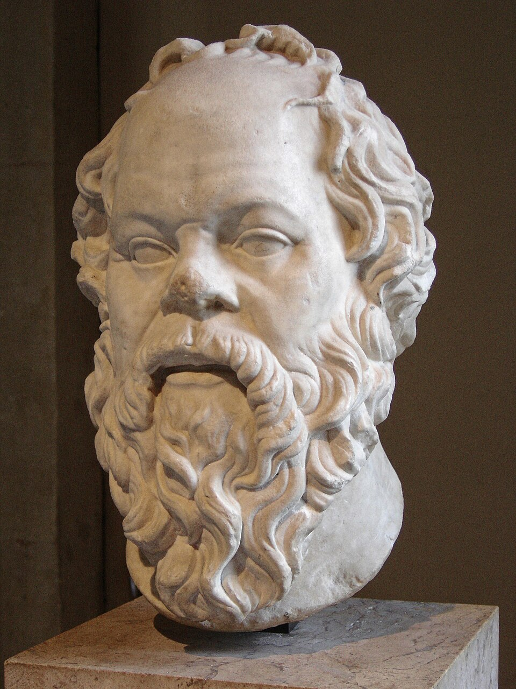

SON GÜN
Tarihin en kritik dönüm noktaları, gizemli ölümler ve son anlar...
Bilim Uğruna Adanmış Bir Hayat: Marie Curie'nin Radyasyonla Gelen Sonu
Fizik ve kimya olmak üzere iki farklı bilim dalında Nobel Ödülü kazanan tarihteki tek insan olan Marie Curie (Madam Curi...

İpatiev Evi'nin Bodrumunda Katliam: Romanov Ailesinin Kurşuna Dizilişi
1917 Bolşevik İhtilali'nin ardından tahttan feragat eden son Rus Çarı II. Nikolay ve ailesi, 1918 yazında Ural bölgesind...
Hollywood'un Işıltılı Trajedisi: Marilyn Monroe'nun Gizemli Ölümü
20. yüzyılın en büyük sinema ikonu ve popüler kültür efsanesi Marilyn Monroe, 5 Ağustos 1962 Pazar günü sabahın erken sa...
Edebiyatın Yalnız Avcısı: Ernest Hemingway'in Idaho'daki Sessizliği
'Çanlar Kimin İçin Çalıyor', 'Silahlara Veda' ve 'Yaşlı Adam ve Deniz' gibi başyapıtların yazarı, Nobel ve Pulitzer ödül...

Birinci Dünya Savaşı'nı Başlatan Kurşunlar: Franz Ferdinand Suikastı
28 Haziran 1914 Pazar günü Avusturya-Macaristan İmparatorluğu veliahdı Arşidük Franz Ferdinand ve eşi Düşes Sophie, aske...

Sürgündeki İmparatorun Sonu: Napolyon Bonapart ve Arsenik Esrarı
Avrupa kıtasını fetheden ve hukuk devrimleri gerçekleştiren Fransız İmparatoru Napolyon Bonapart, 1815'teki Waterloo yen...
Yarım Kalan Requiem: Wolfgang Amadeus Mozart'ın Şüpheli Ölümü
Müzik tarihinin tartışmasız en büyük dehalarından Wolfgang Amadeus Mozart, henüz 35 yaşındayken 5 Aralık 1791 gecesi saa...

Yüzyıl Savaşları'nın Bakiresi: Jeanne d'Arc'ın Yakılarak İdamı
Yüzyıl Savaşları sırasında Tanrı'dan vahiy aldığını söyleyerek Fransız ordusunu İngiliz işgaline karşı tarihi zaferlere ...
Balkondaki Keskin Nişancı: Martin Luther King Jr.'ın Katledilmesi
'Bir Hayalim Var' konuşmasıyla ırk ayrımcılığına karşı küresel bir vicdan hareketi başlatan ve 1964 Nobel Barış Ödülü'nü...
Çarlık Rusyası'nda Gizemli Bir Gece: Grigori Rasputin'in Zehirlenmesi ve Katli
Romanov Hanedanı üzerinde kurduğu esrarengiz nüfuzla Rus aristokrasisinin nefretini kazanan Sibiryalı 'çılgın keşiş' Gri...

Sanatın Yalnız Dehası: Vincent van Gogh'un Auvers Tarlalarındaki Vedası
Modern resim sanatının en büyük öncülerinden Vincent van Gogh, ömrü boyunca mücadele ettiği ağır psikolojik bunalımlar v...
Şiddetsizliğin Mimarı Mahatma Gandi'ye Yönelen Kurşunlar
Hindistan'ın bağımsızlığını pasif direniş ve şiddetsizlik (Ahimsa) felsefesiyle kazandıran 'Büyük Ruh' Mahatma Gandi, 30...

Devrim Mahkemesi ve Giyotin: Kraliçe Marie Antoinette'in İdamı
Fransız Devrimi'nin en radikal döneminde, Kral XVI. Louis'nin idamından dokuz ay sonra sıra eşi Marie Antoinette'e geldi...

Dünyayı Fetheden Hükümdar: Büyük İskender'in Babil'deki Ani Vefatı
Tuna Nehri'nden İndus Nehri'ne kadar uzanan bilinen dünyanın büyük kısmını fetheden Makedonya Kralı Büyük İskender, M.Ö....
Paris Tünelinde Kara Gece: Prenses Diana'nın Trajik Kazası
31 Ağustos 1997 gecesi Galler Prensesi Diana, sevgilisi Dodi Al Fayed ile birlikte Paris'teki Ritz Oteli'nden ayrıldı. K...
Dallas Konvoyunda Açılan Ateş: John F. Kennedy'nin Trajik Sonu
22 Kasım 1963 Cuma günü yerel saatle 12.30'da ABD'nin 35. Başkanı John F. Kennedy, eşi Jacqueline Kennedy ile birlikte T...

Nil'in Son Kraliçesi Kleopatra'nın Gizemli Ölümü
Ptolemaios Hanedanı'nın son hükümdarı VII. Kleopatra, sevgilisi ve müttefiki Marcus Antonius'un Actium Deniz Muharebesi'...
Abraham Lincoln'e Ford Tiyatrosu'nda Hain Suikast
14 Nisan 1865 Cuma akşamı, Amerikan İç Savaşı'nın sona ermesinden sadece beş gün sonra, ABD Başkanı Abraham Lincoln ve e...

Sokrates'in Baldıran Zehri ile İmtihanı: Düşüncenin Bedeli
Antik Atina'nın en büyük filozofu Sokrates, M.Ö. 399 yılında şehrin tanrılarına inanmamak ve gençlerin ahlakını bozmak s...
Jül Sezar'ın Son Günü: Senatoda 23 Bıçak Darbesi (Ides of March)
M.Ö. 15 Mart 44'te Roma Diktatörü Jül Sezar, Pompey Tiyatrosu'nda toplanan Senato oturumuna katıldı. Senato binasına gir...